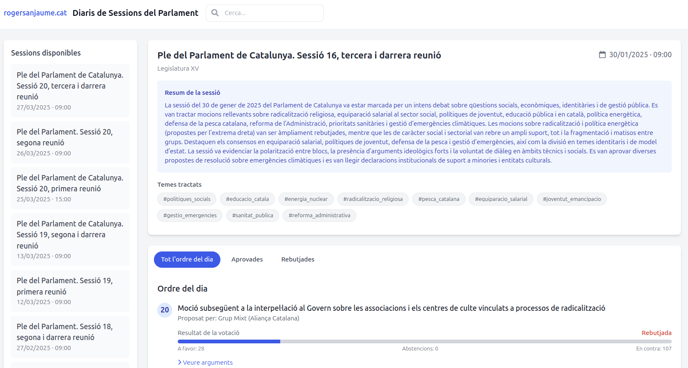
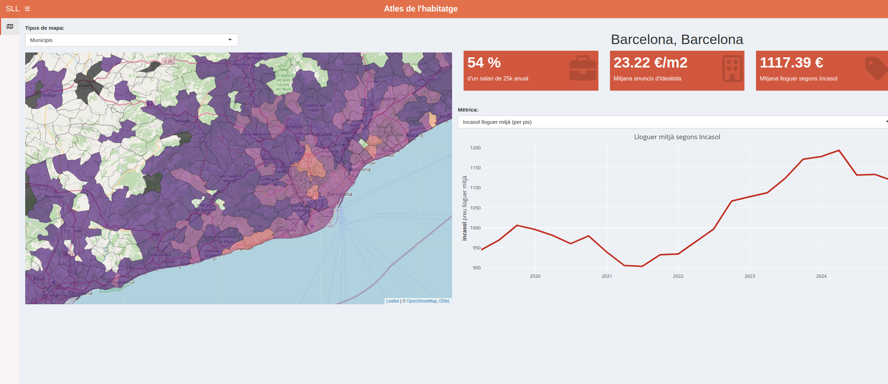
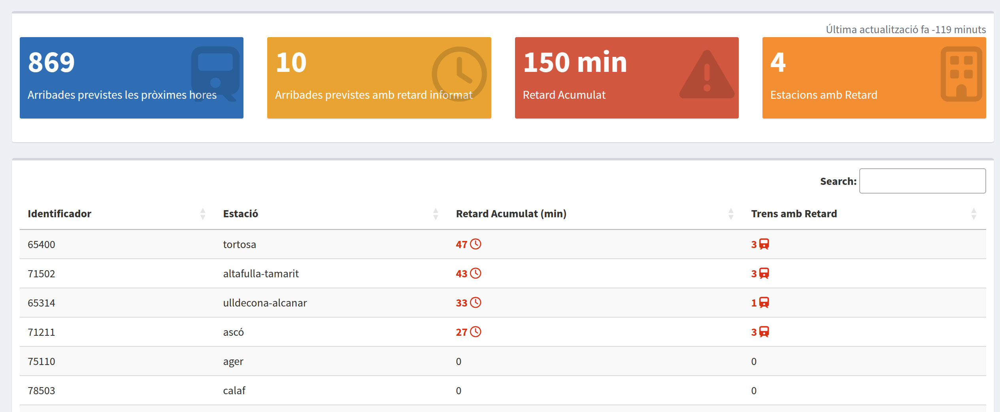
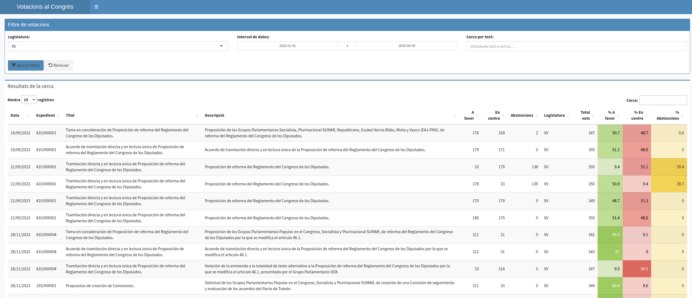
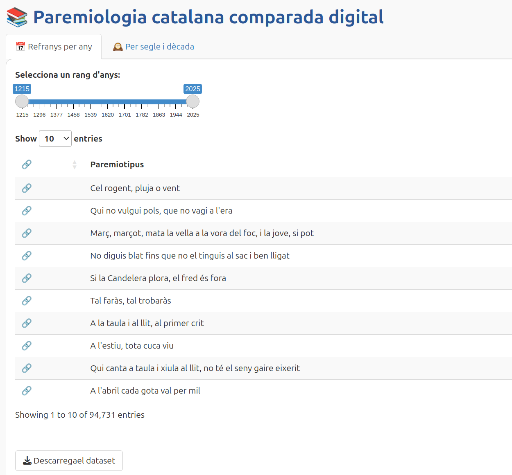
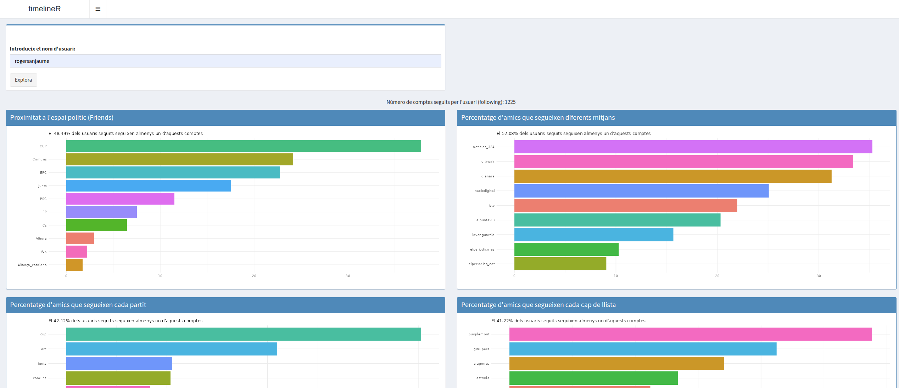

WikiTrends
[ Live ]Comparador històric de visites a la Viquipèdia. Permet analitzar i contrastar tendències de lectura entre diferents articles i edicions idiomàtiques de manera interactiva.
Ontologia de l'Espai Latent
[ Live ]Visualització interactiva que mapeja 1.000 filòsofs en l'espai semàntic. La posició de cada pensador reflecteix la distància intel·lectual entre les seves idees — calculat mitjançant vectors d'embeddings de 3.072 dimensions.
PRISMA
[ Live ]Metamitjà que agrega la mateixa notícia en diferents mitjans mostrant el biaix i punts cecs de les diferents narratives en funció dels eixos dreta-esquerra i centralisme-perifèria de cada línia editorial.
Viasona Data
[ Live ]Visualització d'artistes catalans i les seves connexions. Basada en dades de Viasona i Spotify, permet escoltar fragments de les cançons.

Parlament de Catalunya
[ Live ]Consulta ràpida del diari de sessions parlamentàries. Cerca per contingut, filtra votacions i visualitza els arguments de cada grup parlamentari.

Atles de l'Habitatge
[ Live ]Dashboard per monitorar preus del lloguer a Catalunya. Integra dades oficials d'Incasòl i portals immobiliaris amb comparatives territorials.

Retards Renfe
[ Down ]Monitoratge en temps real dels retards de trens a Catalunya. Detall d'estacions afectades, minuts acumulats i arribades previstes.

Votacions al Congrés
[ Live ]Cerca, filtra i visualitza les votacions al Congrés dels Diputats. Patrons de vot per grup parlamentari i enllaços als vídeos d'intervenció.

Paremiologia
[ Live ]Explorador interactiu de la base de dades de la Paremiologia Catalana Comparada Digital. Visualitza l'evolució històrica dels dits.

TimelineR
[ Down ]Algorisme basat en dades públiques i anàlisi de xarxes que analitza preferències polítiques a Twitter a partir de les relacions entre seguidors.